Diseño de tarjetas de circuito impreso con PROTEUS
Vamos a configurar un proyecto paso a paso para exportar un esquemático al diseño de la PCB correspondiente.
Esquemático fuente DC variable, +12V y +5V
1) Insertamos los componentes requeridos para elaborar el circuito de la fuente:
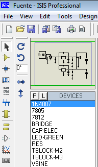
2) Realizamos las conexiones entre los componentes:
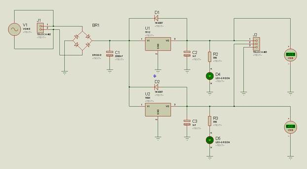
3) Configuramos los componentes.
Los filtros son capacitores de diferente valor, por lo tanto debemos configurarlos antes de generar el circuito impreso. C1 es un capacitor de 2200uF, por lo tanto su encapsulado ELEC-RAD30 es más grande que el de C2 y C3.
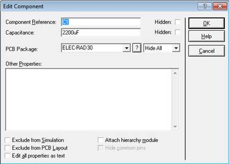
Configurar encapsulado de los diodos D1 y D2 como DO35.
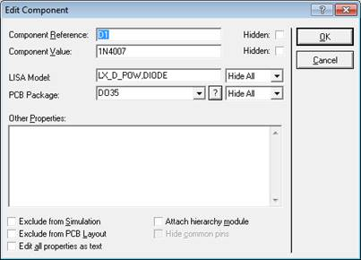
Debemos asignar un encapsulado a los diodos LED, siguiendo el procedimiento mostrado a continuación:
Una vez finalizado el esquemático podemos pasar al diseño de la PCB con la herramienta ARES.
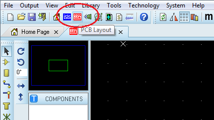
4) Agregamos un polígono de la Toolbox “2D Graphics Box Mode”
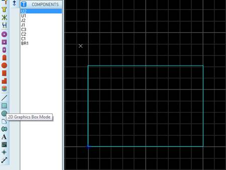
Este polígono corresponderá al área de nuestro circuito, por lo tanto, debemos asociarlo con la capa “Board Edge” haciendo Click derecho sobre el polígono y modificando la opción en el menú “Change Layer”.
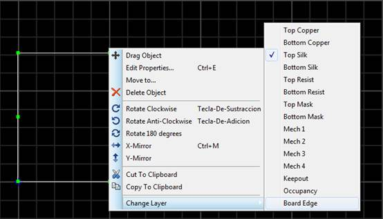
Muchas de las medidas que se utilizan en este programa están dadas en milésimas de pulgada.
A continuación una sencilla tabla para recordar su equivalencia:
|
Medida (th) |
Equivalencia (mm) |
|
10 |
0.2540 |
|
20 |
0.5080 |
|
30 |
0.7620 |
|
40 |
1.0160 |
|
60 |
1.5240 |
|
80 |
2.0320 |
Para cambiar entre sistema métrico y sistema imperial solamente pulse la letra m en su teclado.
6) Una vez definido el borde de la placa, éste debe quedar como un marco de color amarillo.
Ahora vamos a ubicar los componentes requeridos para el circuito. Este es un proceso semi-automático que se ejecuta con la opción ”Auto-placer” del menú “Tools”.
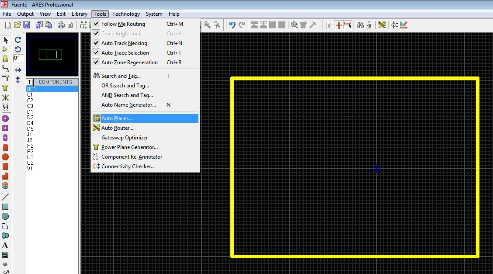
Nos aseguramos de que todos los componentes estén marcados y hacemos Click en OK.
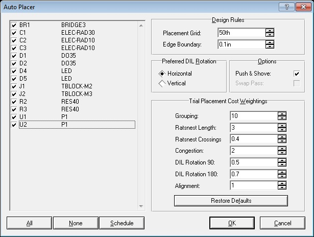
7) Realizamos la redistribución de los componentes de manera manual y guiándonos por las líneas de conexión proporcionadas por el software, las cuales vienen definidas desde la creación del esquemático.
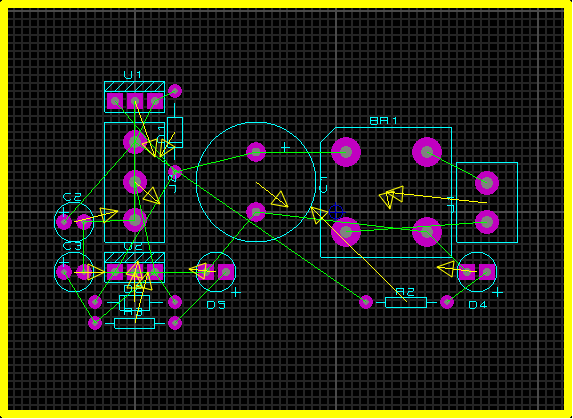
8) Cuando los componentes hayan sido ubicados en su posición, verificamos si es necesario redimensionar el tamaño de la placa, de manera que todos los componentes cuenten con el espacio requerido dentro del perímetro del polígono amarillo.
Para medir las dimensiones de la placa siga el procedimiento que se muestra a continuación:
Ahora podemos generar la capa “Power Plane” que servirá como blindaje de nuestro circuito.
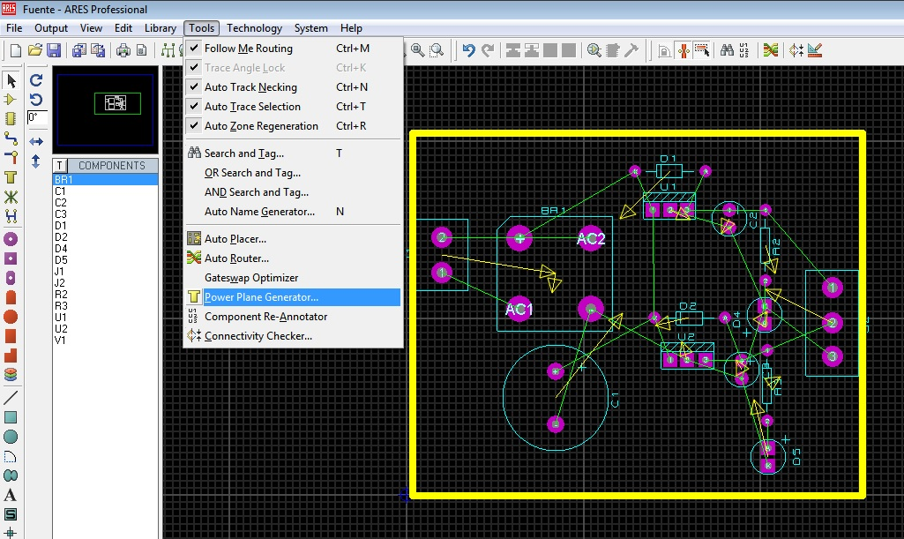
Opciones recomendadas para crear la capa “Power Plane”
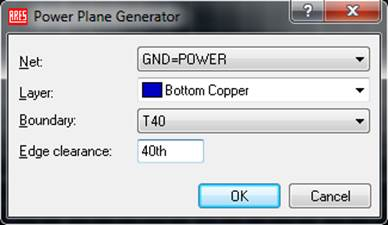
9) Buscamos el borde de la capa “Power Plane” (bloque azul), hacemos doble Click para modificar sus parámetros.
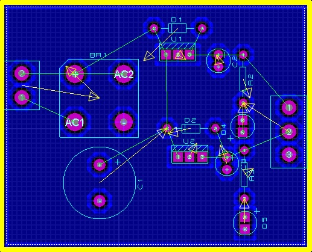
Parámetros recomendados para la capa “Power Plane”. En esta ventana puede también cambiar el color de su placa de circuito impreso.
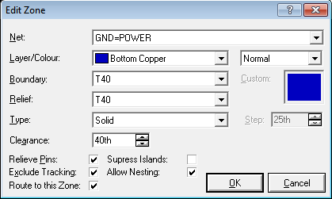
10) Ahora podemos generar la capa que contendrá las pistas de cobre que interconectarán nuestros componentes. Esto lo haremos mediante la opción “Auto-router” del menú Tools.
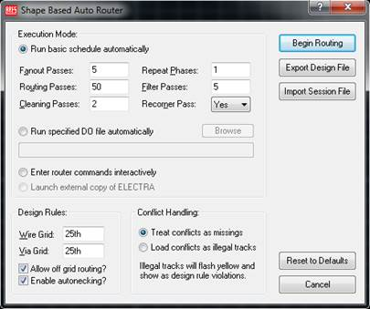
11) Es posible que el software no haya podido generar una capa de pistas en la que todas ellas hayan quedado en la parte inferior de la placa (pistas de color rojo). Aquellas pistas que no tengan ningún obstáculo podrán ser transferidas a la capa “Bottom Copper” mediante la función “Change Layer”
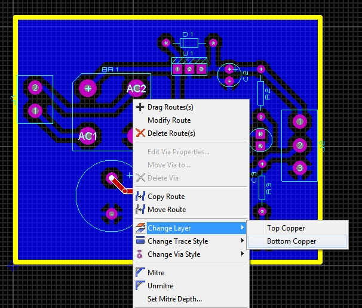
12) Un aspecto fundamental en el diseño de circuitos impresos es la dimensión de las pistas de cobre. En términos generales, una pista nunca será demasiado ancha para la función que habrá de cumplir en el circuito si puede conducir la cantidad de corriente necesaria para cumplir su función.
En este enlace encontrará una herramienta para calcular el ancho de las pistas de cobre basada en su longitud y la cantidad de corriente que transportará.
Esta utilidad calcula el ancho de una pista en el diseño de circuitos impresos de acuerdo a la curva de la norma IPC-2221 (Formalmente llamada IPC-D-275) tomando como base el valor de la corriente que va a circular por ella, así como el espesor del cobre utilizado.
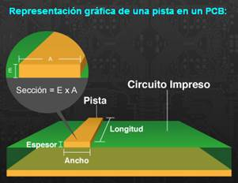
Ejemplo: cálculo del ancho de una pista para conducir una corriente hasta de 1 Amperio.
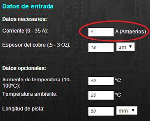
El resultado arrojado por la calculadora es el siguiente:
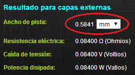
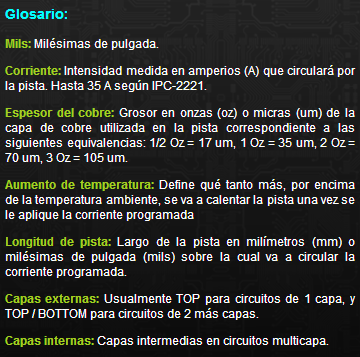
Para modificar el ancho de una pista hacemos Click derecho sobre la misma y la modificamos con la opción “Change Trace Style”.
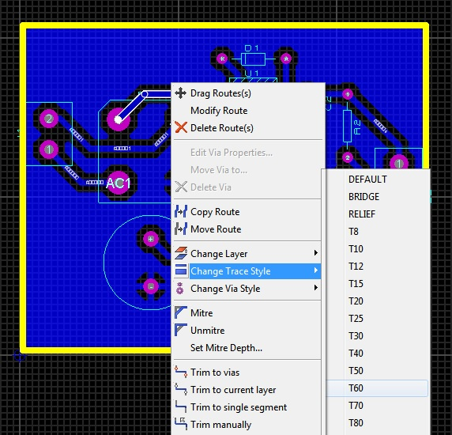
13) Si quedan pistas por conectar, el programa lo notificará mostrando las líneas correspondientes a las conexiones faltantes y en la parte inferior llevará el conteo.
En la imagen – 2 conexiones faltantes (2 missing).
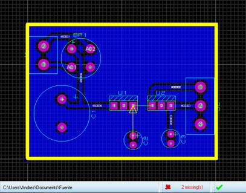
14) Cuando no haya conexiones faltantes aparecerá una indicación en la parte inferior de la ventana (No CRC Errors)
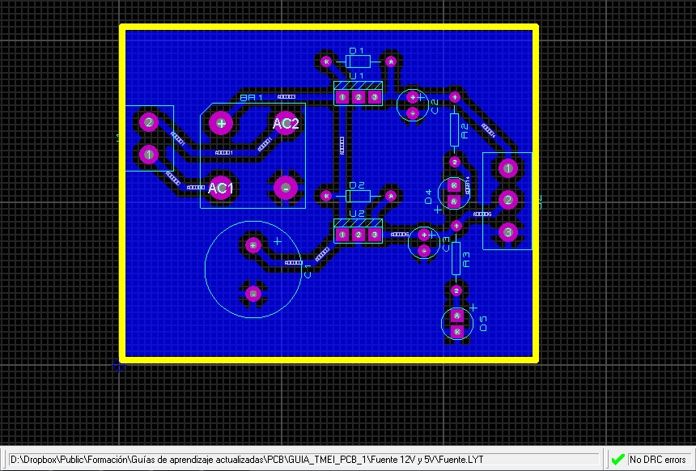
Configuramos las dimensiones de los PAD para que los pines de los componentes a ensamblar en la tarjeta encajen con exactitud en las perforaciones y para tener un área de soldadura que permita una adherencia firme.
Para cambiar las dimensiones de un PAD: Hacer Click derecho sobre el PAD y seleccionar la opción “Edit Properties”
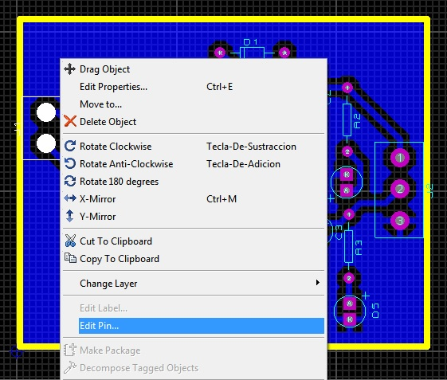
La opción “Style” nos permite seleccionar entre diferentes formas y dimensiones de PAD.
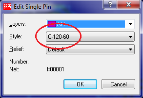
Los parámetros del PAD son su forma, dimensiones externas y dimensiones internas (diámetro de perforación).
Por ejemplo, un PAD tipo S-70-40 es un PAD cuadrado (Square) con 70 th (milésimas de pulgada) de lado y 40 th de diámetro de perforación.
Un PAD tipo C-80-40 es un PAD circular (Circle) con 80 th (milésimas de pulgada) de diámetro y 30 th de diámetro de perforación.
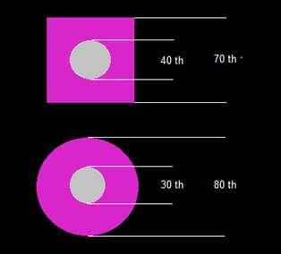
Dimensiones recomendadas para los PAD de diferentes encapsulados.
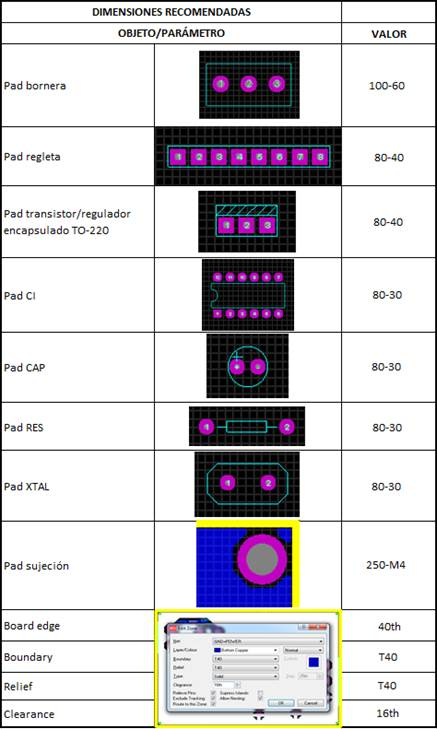
15) Finalmente, agregamos Pad’s de tamaño C250-M4 que servirán para la sujeción de la placa a la carcasa que la contendrá.
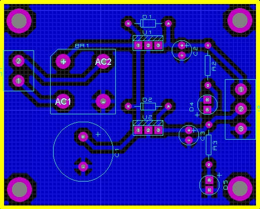
16) En el menú tenemos la opción “3D visualizer” para conocer el aspecto que tendrá nuestra PCB una vez ensamblada.
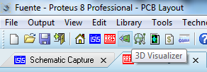
Aspecto de la placa vista desde la parte superior (capa de componentes)
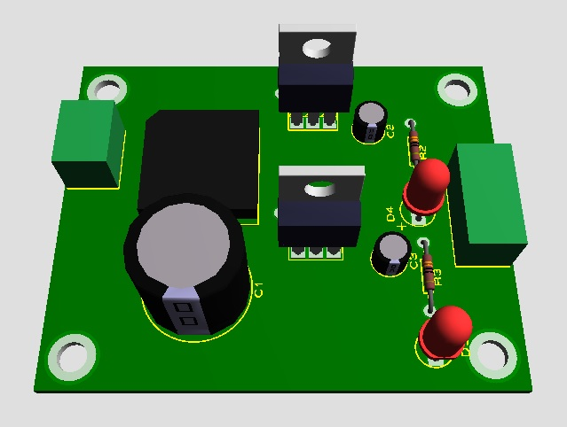
Aspecto de la placa vista desde la parte inferior (capa de pistas de cobre)
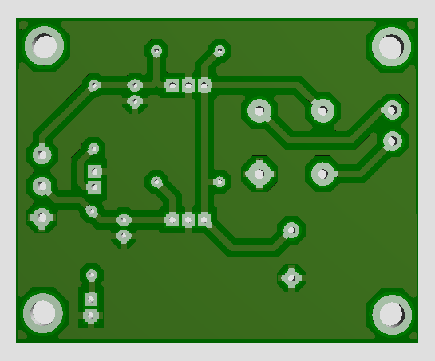